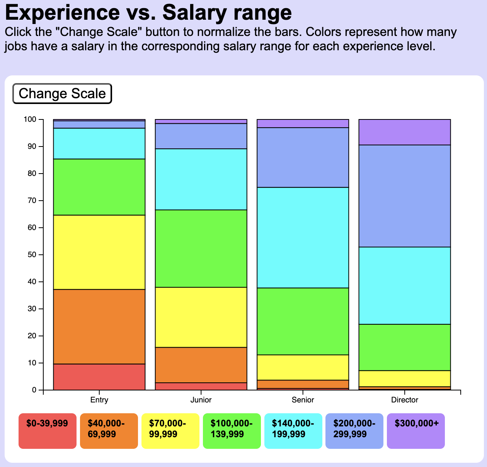
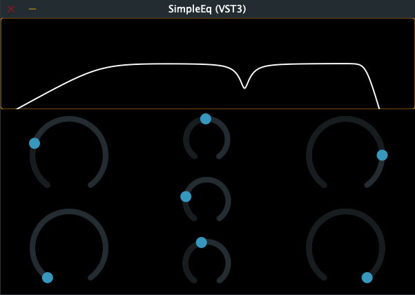

Here's a visualization I made.
Here's another project.
This is a simple equalizer audio plugin. Plugins are the tools that modern music produers use to add effects to their music.
Some plugins create reverb effects or distortion, but this one allows users to cut out high or low frequencies from any audio input. It also contains a notch band for precise adjustments.
It is currently fully functional, but I plan to add a spectrum analyzer and I'll continue to tweak the UI. This project taught me a lot about modern C++ and the JUCE framework!

Education
I started my college career at Michigan State University as a music education major. I really enjoyed the marching band and was also a part of the second most prestigious ensemble as a freshman.
After I went home during the lockdown, I thought more about what I wanted to do with my life and computer science sounded perfect.
Now I'm preparing to graduate with a strong foundation in C++, Python, and web development.
Experience
During the summer in 2022, I completed a research fellowship for the computer science department at NIU. In this position I tried out 45 different individual programming assignments and I also worked on 12 group projects.
Currently, I'm stocking shelves at a Target store here in DeKalb. Before that I worked at an Amazon Fresh as a zone leader. In this role, I got to train new team members and I also made sure everything was completed on time.
I've also done a few other jobs such as teaching music lessons and I was a part of the Spartan Marching Band physical operations team.
Reach out!